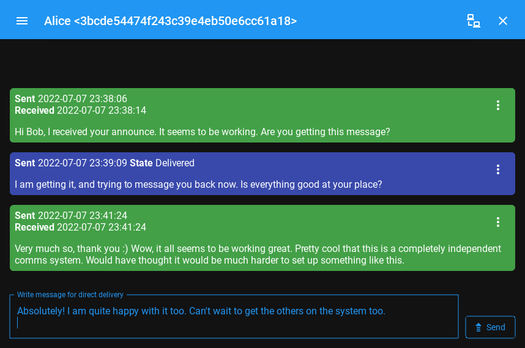

Getting Started Fast¶
The best way to get started with the Reticulum Network Stack depends on what you want to do. This guide will outline sensible starting paths for different scenarios.
Try Using a Reticulum-based Program¶
If you simply want to try using a program built with Reticulum, a few different programs exist that allow basic communication and a range of other useful functions over even extremely low-bandwidth Reticulum networks.
These programs will let you get a feel for how Reticulum works. They have been designed to run well over networks based on LoRa or packet radio, but can also be used completely over local WiFi, wired ethernet, the Internet, or any combination.
As such, it is easy to get started experimenting, without having to set up any radio transceivers or infrastructure just to try it out. Launching the programs on separate devices connected to the same WiFi network is enough to get started, and physical radio interfaces can then be added later.
Nomad Network¶
The terminal-based program Nomad Network provides a complete encrypted communications suite built with Reticulum. It features encrypted messaging (both direct and delayed-delivery for offline users), file sharing, and has a built-in text-browser and page server with support for dynamically rendered pages, user authentication and more.

Nomad Network is a user-facing client for the messaging and information-sharing protocol LXMF, another project built with Reticulum.
You can install Nomad Network via pip:
# Install ...
pip3 install nomadnet
# ... and run
nomadnet
Please Note: If this is the very first time you use pip to install a program on your system, you might need to reboot your system for your program to become available. If you get a “command not found” error or similar when running the program, reboot your system and try again.
Sideband¶
If you would rather use a program with a graphical user interface, you can take a look at Sideband, which is available for Android, Linux and macOS.
{kind=link}
Sideband is currently in the early stages of development, but already provides basic communication features, and interoperates with Nomad Network, or any other LXMF client.
Using the Included Utilities¶
Reticulum comes with a range of included utilities that make it easier to manage your network, check connectivity and make Reticulum available to other programs on your system.
You can use rnsd to run Reticulum as a background or foreground service,
and the rnstatus, rnpath and rnprobe utilities to view and query
network status and connectivity.
To learn more about these utility programs, have a look at the Using Reticulum on Your System chapter of this manual.
Creating a Network With Reticulum¶
To create a network, you will need to specify one or more interfaces for
Reticulum to use. This is done in the Reticulum configuration file, which by
default is located at ~/.reticulum/config. You can edit this file by hand,
or use the interactive rnsconfig utility.
When Reticulum is started for the first time, it will create a default configuration file, with one active interface. This default interface uses your existing ethernet and WiFi networks (if any), and only allows you to communicate with other Reticulum peers within your local broadcast domains.
To communicate further, you will have to add one or more interfaces. The default configuration includes a number of examples, ranging from using TCP over the internet, to LoRa and Packet Radio interfaces.
With Reticulum, you only need to configure what interfaces you want to communicate over. There is no need to configure address spaces, subnets, routing tables, or other things you might be used to from other network types.
Once Reticulums knows which interfaces it should use, it will automatically discover topography and configure transport of data to any destinations it knows about.
In situations where you already have an established WiFi or ethernet network, and many devices that want to utilise the same external Reticulum network (for example over LoRa), it will often be sufficient to let one system act as a Reticulum gateway, by adding any external interfaces to this systems configuration, and enabling transport. Any other device on your local WiFi will then be able to connect to this wider Reticulum network just using the default interface configuration.
Possibly, the examples in the config file are enough to get you started. If you want more information, you can read the Building Networks and Interfaces chapters of this manual.
Connecting Reticulum Instances Over the Internet¶
Reticulum currently offers two interfaces suitable for connecting instances over the Internet: TCP and I2P. Each interface offers a different set of features, and Reticulum users should carefully choose the interface which best suites their needs.
The TCPServerInterface allows users to host an instance accessible over TCP/IP. This
method is generally faster, lower latency, and more energy efficient than using I2PInterface,
however it also leaks more data about the server host.
TCP connections reveal the IP address of both your instance and the server to anyone who can inspect the connection. Someone could use this information to determine your location or identity. Adversaries inspecting your packets may be able to record packet metadata like time of transmission and packet size. Even though Reticulum encrypts traffic, TCP does not, so an adversary may be able to use packet inspection to learn that a system is running Reticulum, and what other IP adresses connect to it. Hosting a publicly reachable instance over TCP also requires a publicly reachable IP address, which most Internet connections don’t offer anymore.
The I2PInterface routes messages through the Invisible Internet Protocol
(I2P). To properly use this interface, users must also run an I2P daemon in
parallel to rnsd. For always-on I2P nodes it is recommended to use i2pd.
By default, I2P will encrypt and mix all traffic sent over the Internet, and hide both the sender and receiver Reticulum instance IP addresses. Running an I2P node will also relay other I2P user’s encrypted packets, which will use extra bandwidth and compute power, but also makes timing attacks and other forms of deep-packet-inspection much more difficult.
I2P also allows users to host globally available Reticulum instances from non-public IPs and behind firewalls.
In general it is recommended to use an I2P node if you want to host a publically accessible instance, while preserving anonymity. If you care more about performance, and a slightly easier setup, use TCP.
Connect to the Public Testnet¶
An experimental public testnet has been made accessible over both I2P and TCP. You can join it
by adding one of the following interfaces to your .reticulum/config file:
# For connecting over TCP/IP:
[[RNS Testnet Frankfurt]]
type = TCPClientInterface
interface_enabled = yes
outgoing = True
target_host = frankfurt.rns.unsigned.io
target_port = 4965
# For connecting over I2P:
[[RNS Testnet I2P Node A]]
type = I2PInterface
interface_enabled = yes
peers = ykzlw5ujbaqc2xkec4cpvgyxj257wcrmmgkuxqmqcur7cq3w3lha.b32.i2p
Many other Reticulum instances are connecting to this testnet, and you can also join it via other entry points if you know them. There is absolutely no control over the network topography, usage or what types of instances connect. It will also occasionally be used to test various failure scenarios, and there are no availability or service guarantees.
Develop a Program with Reticulum¶
If you want to develop programs that use Reticulum, the easiest way to get started is to install the latest release of Reticulum via pip:
pip3 install rns
The above command will install Reticulum and dependencies, and you will be ready to import and use RNS in your own programs. The next step will most likely be to look at some Example Programs.
For extended functionality, you can install optional dependencies:
pip3 install pyserial netifaces
Further information can be found in the API Reference.
Participate in Reticulum Development¶
If you want to participate in the development of Reticulum and associated utilities, you’ll want to get the latest source from GitHub. In that case, don’t use pip, but try this recipe:
# Install dependencies
pip3 install cryptography pyserial netifaces
# Clone repository
git clone https://github.com/markqvist/Reticulum.git
# Move into Reticulum folder and symlink library to examples folder
cd Reticulum
ln -s ../RNS ./Examples/
# Run an example
python3 Examples/Echo.py -s
# Unless you've manually created a config file, Reticulum will do so now,
# and immediately exit. Make any necessary changes to the file:
nano ~/.reticulum/config
# ... and launch the example again.
python3 Examples/Echo.py -s
# You can now repeat the process on another computer,
# and run the same example with -h to get command line options.
python3 Examples/Echo.py -h
# Run the example in client mode to "ping" the server.
# Replace the hash below with the actual destination hash of your server.
python3 Examples/Echo.py 3e12fc71692f8ec47bc5
# Have a look at another example
python3 Examples/Filetransfer.py -h
When you have experimented with the basic examples, it’s time to go read the Understanding Reticulum chapter.
Reticulum on ARM64¶
On some architectures, including ARM64, not all dependencies have precompiled
binaries. On such systems, you will need to install python3-dev before
installing Reticulum or programs that depend on Reticulum.
# Install Python and development packages
sudo apt update
sudo apt install python3 python3-pip python3-dev
# Install Reticulum
python3 -m pip install rns
Reticulum on Android¶
Reticulum can be used on Android in different ways. The easiest way to get started is using an app like Sideband.
For more control and features, you can use Reticulum and related programs via the Termux app, at the time of writing available on F-droid.
Termux is a terminal emulator and Linux environment for Android based devices, which includes the ability to use many different programs and libraries, including Reticulum.
Since the Python cryptography.io module does not offer pre-built wheels for Android, the standard one-line install of Reticulum does not work on Android, and a few extra commands are required.
From within Termux, execute the following:
# First, make sure indexes and packages are up to date.
pkg update
pkg upgrade
# Then install dependencies for the cryptography library.
pkg install python build-essential openssl libffi rust
# Make sure pip is up to date, and install the wheel module.
pip3 install wheel pip --upgrade
# To allow the installer to build the cryptography module,
# we need to let it know what platform we are compiling for:
export CARGO_BUILD_TARGET="aarch64-linux-android"
# Start the install process for the cryptography module.
# Depending on your device, this can take several minutes,
# since the module must be compiled locally on your device.
pip3 install cryptography
# If the above installation succeeds, you can now install
# Reticulum and any related software
pip3 install rns
It is also possible to include Reticulum in apps compiled and distributed as Android APKs. A detailed tutorial and example source code will be included here at a later point.
Adding Radio Interfaces¶
Once you have Reticulum installed and working, you can add radio interfaces with any compatible hardware you have available. For information on how to configure this, see the Interfaces section of this manual.
A range of common LoRa development boards and transceiver modules can be used as interfaces with Reticulum. You can refer to the following external resources for more information:
If you have communications hardware that you think would be suitable for use with Reticulum, you are welcome to head over to the GitHub discussion pages and propose adding an interface for the hardware.